Yuchen Hong is a Ph.D. candidate in the Camera Intelligence Lab of Peking University, supervised by Prof. Boxin Shi. He received the B.E. degree from Beijing University of Posts and Telecommuications (BUPT) in 2020.
My research interests include physics-/language-/diffusion-based image/video restoration.
Light Flickering Guided Reflection Removal Yuchen Hong#, Yakun Chang#, Jinxiu Liang, Lei Ma, Tiejun Huang, Boxin Shi
IJCV, 2024
[paper]
This paper investigates the problem of removing strong reflections from contaminated image sequences or videos by exploiting periodically varying light flickering.
This paper studies the problem of language-guided reflection separation, which aims at addressing the ill-posed reflection separation problem by introducing language descriptions to provide layer content information.
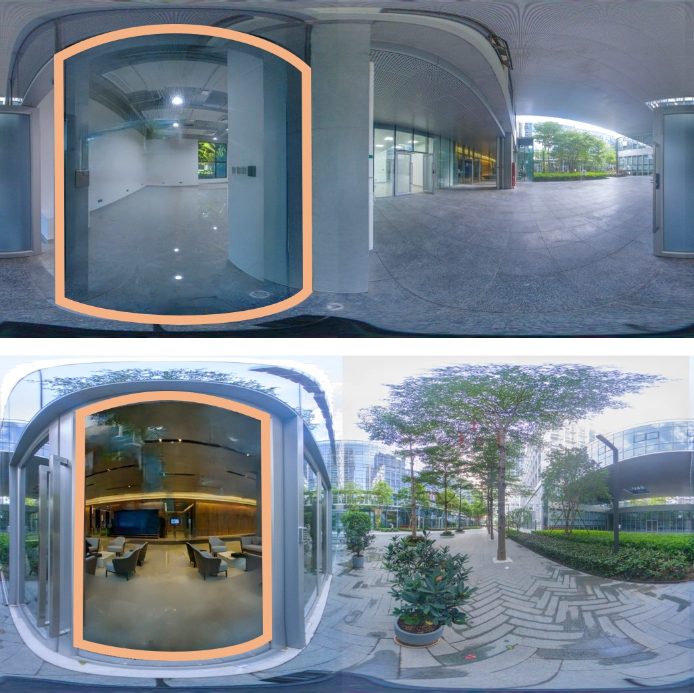
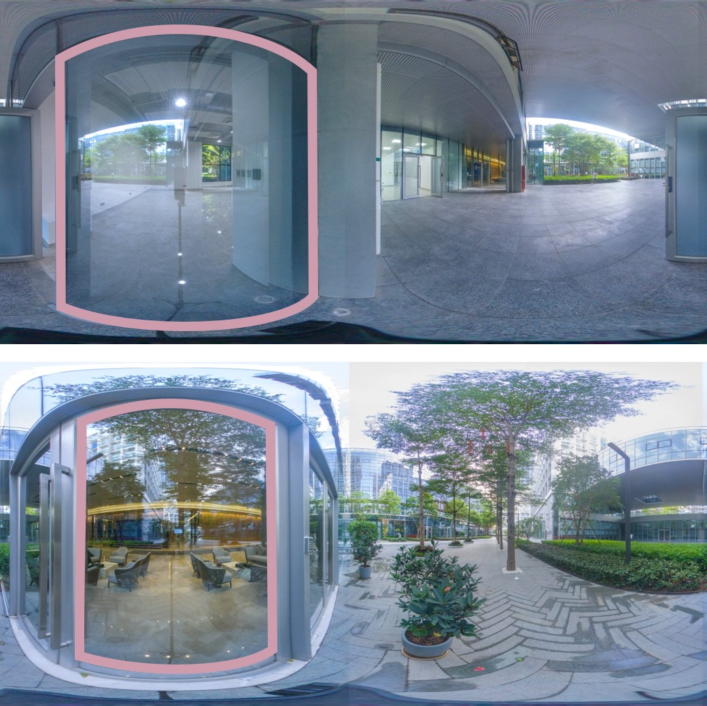
PAR2Net: End-to-end Panoramic Image Reflection Removal Yuchen Hong, Qian Zheng, Lingran Zhao, Xudong Jiang, Alex C. Kot, Boxin Shi
TPAMI, 2023
[paper][supp] [code] [dataset]
This paper proposes the first end-to-end panoramic image reflection removal framework, aiming at reliving the content ambiguity between reflection and transmission scenes.
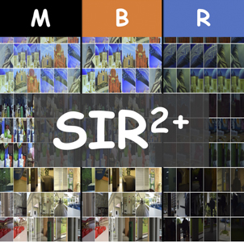
Benchmarking Single-Image Reflection Removal Algorithms
Renjie Wan, Boxin Shi, Haoliang Li, Yuchen Hong, Ling-Yu Duan, Alex C. Kot
TPAMI, 2023
[paper][project page]
This paper proposes the SIR2+ benchmark dataset with a large number and a great diversity of mixture images, and ground truth of background and reflection.
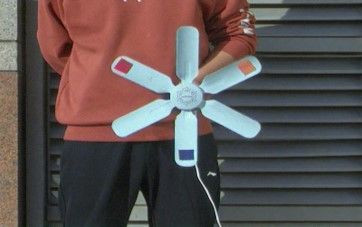
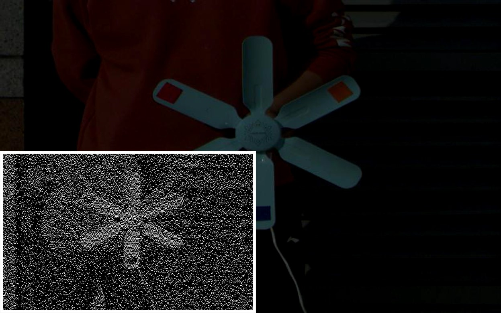
1000 FPS HDR Video With a Spike-RGB Hybrid Camera
Yakun Chang, Chu Zhou, Yuchen Hong, Liwen Hu, Chao Xu, Tiejun Huang, Boxin Shi
CVPR, 2023
[paper]
This paper studies the problem of recovering high frame rate (HFR) and high dynamic range (HDR) color videos from a hybrid camera system composed of a spiking and an alternating-exposure RGB camera.
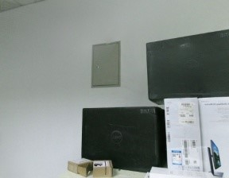
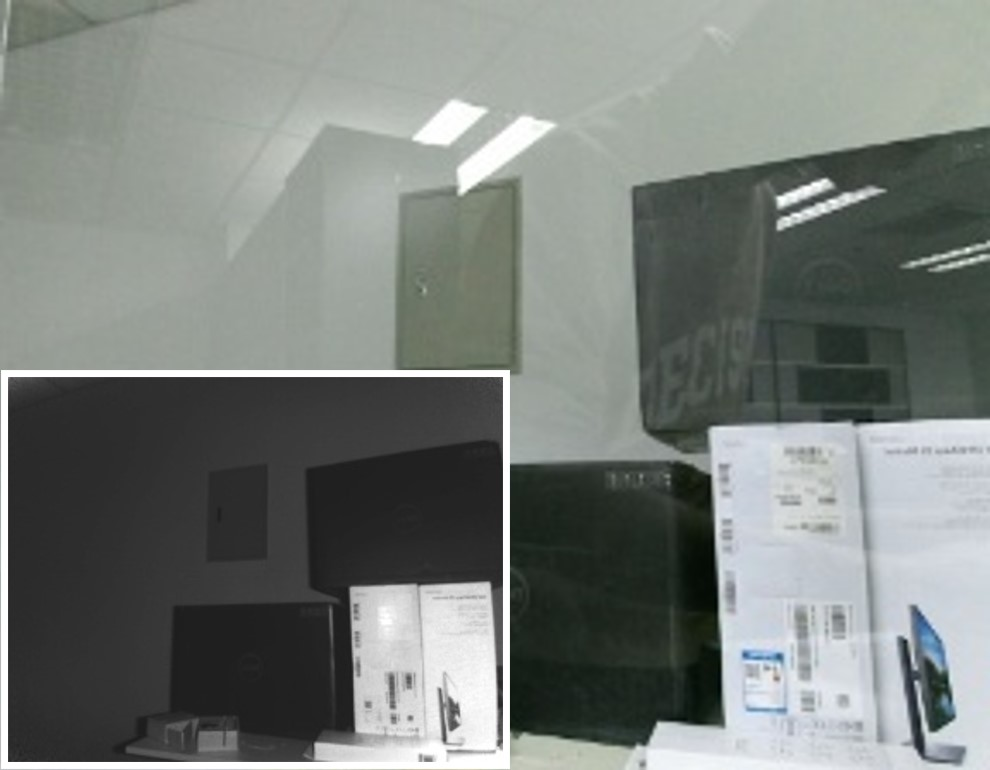
Reflection Removal with NIR and RGB Image Feature Fusion Yuchen Hong, Youwei Lyu, Si Li, Gang Cao, and Boxin Shi
TMM, 2022
[paper] [code] [dataset]
This paper proposes the NIR and RGB feature fused Reflection Removal Network (NIR3Net) to utilize auxiliary information in active NIR images.
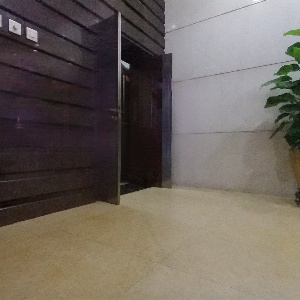
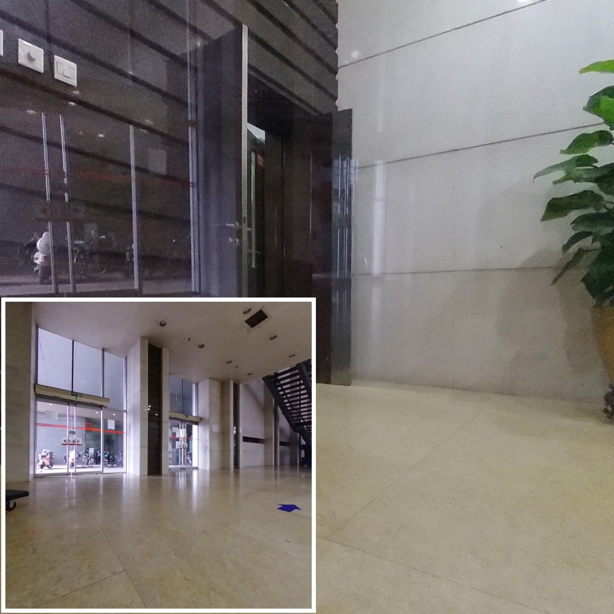
Panoramic Image Reflection Removal Yuchen Hong*, Qian Zheng*, Lingran Zhao, Xudong Jiang, Alex C. Kot, Boxin Shi
CVPR, 2021
[paper] [dataset]
This paper studies the problem of panoramic image reflection removal, aiming at reliving the content ambiguity between reflection and transmission scenes.
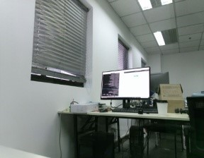
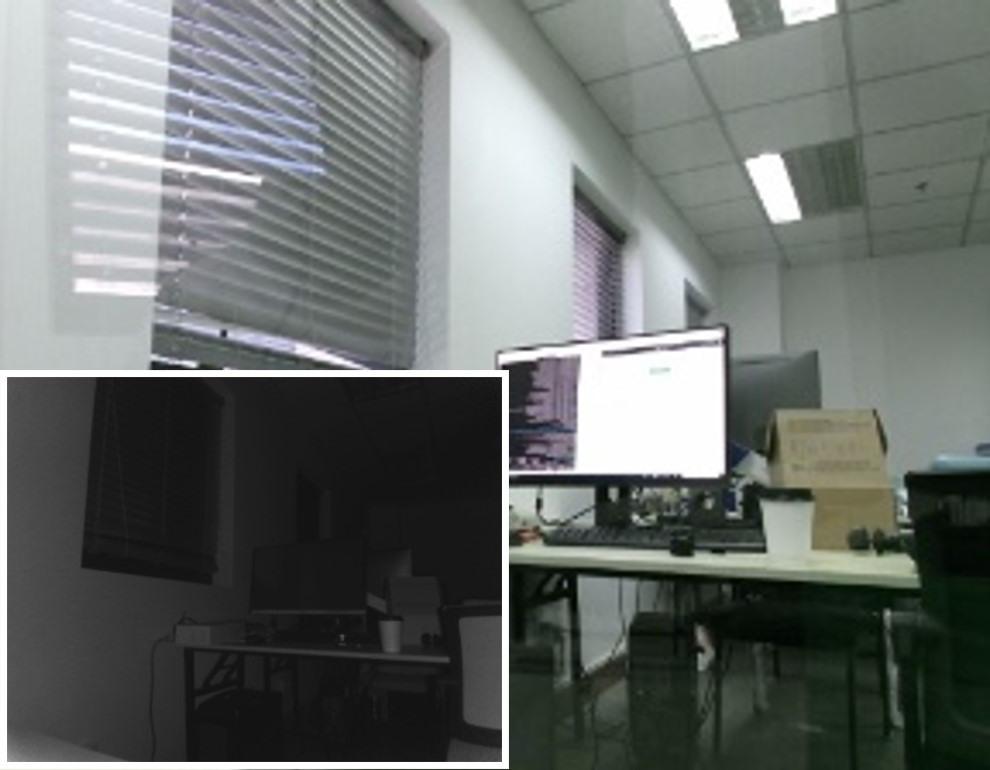
Near-Infrared Image Guided Reflection Removal Yuchen Hong, Youwei Lyu, Si Li, Boxin Shi
ICME, 2020 (Oral Presentation)
[paper] [dataset]
This paper proposes a Near-infrared Image guided Reflection Removal Network (NIR2Net) to remove undesired reflections in an RGB image with the guidance of an NIR image.
Thank Dr. Jon Barron for sharing the source code of his personal page.
{kind=link}